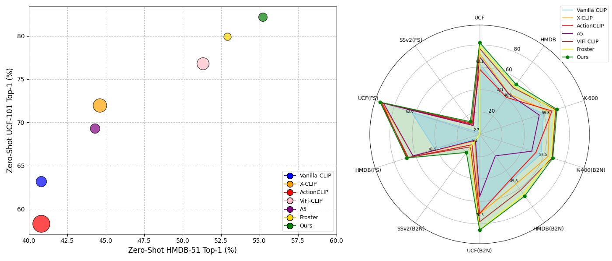
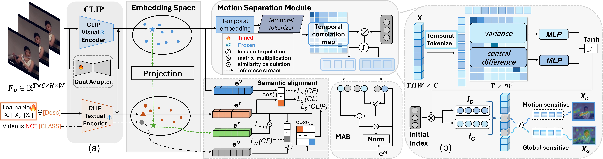
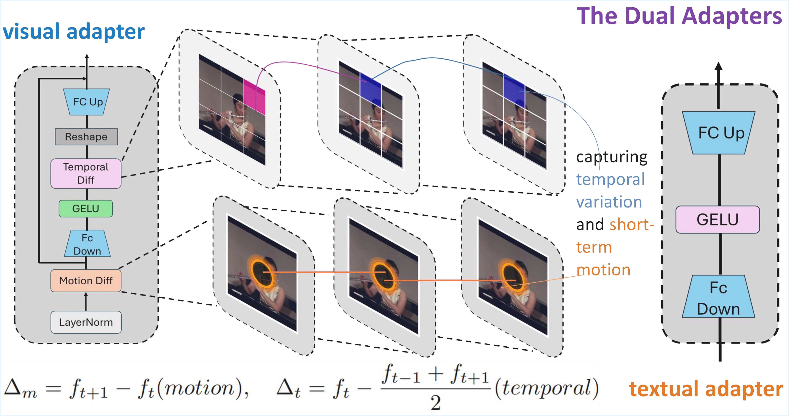
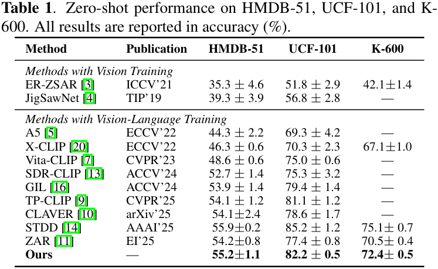
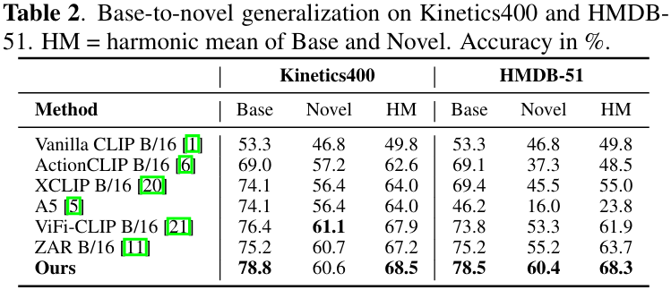
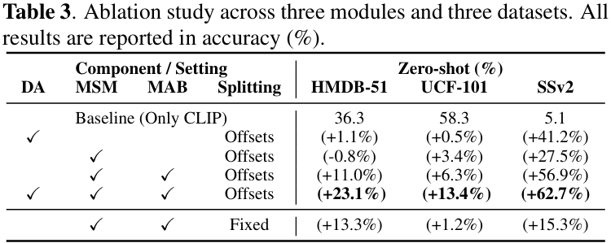
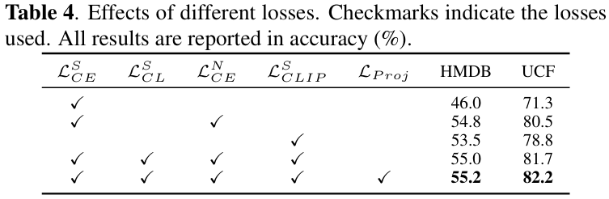

Performance Highlights

Our method consistently outperforms prior CLIP-based approaches across multiple zero-shot action recognition benchmarks.
Abstract
Zero-shot action recognition is challenging due to the semantic gap between seen and unseen classes. We present a novel framework that enhances CLIP with disentangled embeddings and semantic-guided interaction. A Motion Separation Module (MSM) separates motion-sensitive and global-static features, while a Motion Aggregation Block (MAB) employs gated cross-attention to refine motion representation without re-coupling redundant information. To facilitate generalization to unseen categories, we enforce semantic alignment between video features and textual representations by aligning projected embeddings with positive textual prompts, while leveraging negative prompts to explicitly model "non-class" semantics. Experiments on standard benchmarks demonstrate that our method consistently outperforms prior CLIP-based approaches, achieving robust zero-shot action recognition across both coarse and fine-grained datasets.
Background

Comparison between prior CLIP-based approaches and our proposed framework. Unlike previous methods that rely on coupled representations or positive-only prompts, our framework disentangles motion from static context and incorporates negative prompts for more robust semantic alignment.
Method Overview

Overview of our motion-guided semantic alignment framework with disentangled motion modeling and negative prompts.
Adapter Module

Detailed design of our dual adapter module, which bridges the image-video gap and enables effective temporal alignment while preserving CLIP's zero-shot transferability.

First image description.

Second image description.

Third image description.

Fourth image description.

Attention map visualization.

t-SNE visualization.
BibTeX
@misc{wang2026motionguidedsemanticalignmentnegative,
title={Motion-Guided Semantic Alignment with Negative Prompts for Zero-Shot Video Action Recognition},
author={Yiming Wang and Frederick W. B. Li and Jingyun Wang},
year={2026},
eprint={2604.17062},
archivePrefix={arXiv},
primaryClass={cs.CV},
url={https://arxiv.org/abs/2604.17062},
}